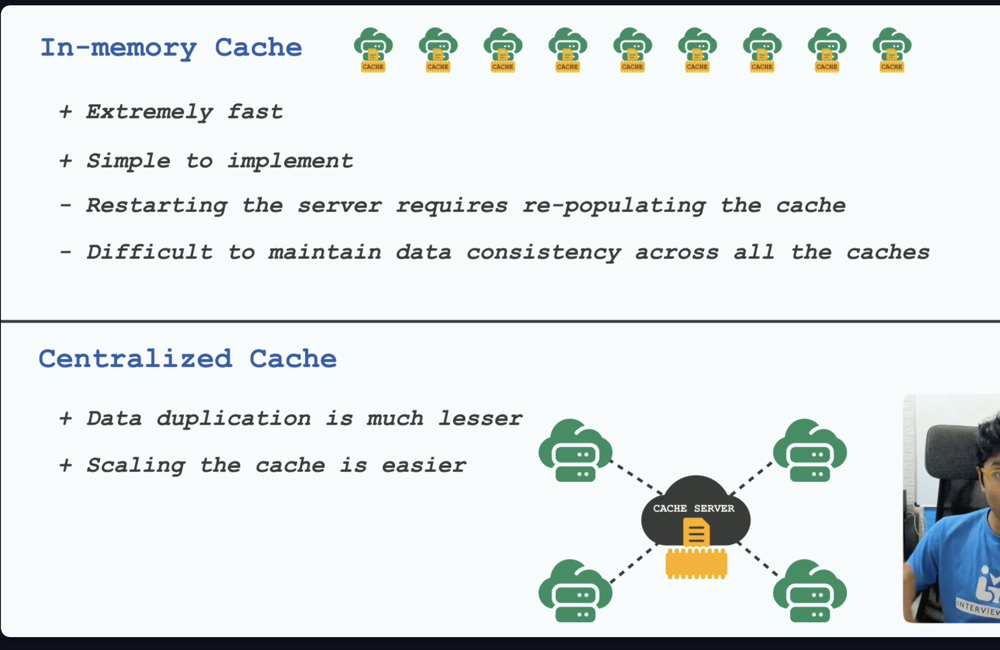
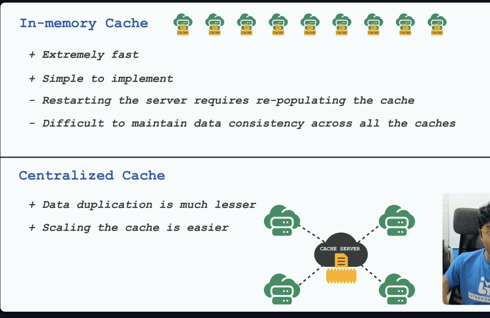

Distributed Caching and Performance Architecture
Core Metric
Cache performance is measured by Average Memory Access Time (AMAT):
To optimize AMAT, one must tune four key factors:
- Eviction Policy
- Write Policy
- Data Distribution
- Cache Placement.
1. Eviction Policies (Replacement Policies)
When the cache reaches capacity (is full), these policies dictate which specific data items must be removed (evicted) to make space for new incoming data,.
A. LRU (Least Recently Used)
- Definition: This policy identifies and evicts the item that has not been accessed for the longest duration of time. It relies heavily on the principle of Temporal Locality,.
- Standard Example: A web browser history. If you visit Site A, then B, then C, then D, and the cache is full, Site A (the earliest visited) is evicted first.
- Specific Use Case: Social Media Feeds (e.g., Twitter/Instagram).
- Reasoning:
- Social media users prioritize recency.
- A post may have high historical engagement (e.g., 1 million likes) from 2 days ago, but it is less relevant to the user than a post from 1 hour ago.
- LRU ensures content remains fresh in the feed,.
B. LFU (Least Frequently Used)
- Definition: This policy tracks the number of times a block or item is accessed. The block with the fewest total accesses (hits) is selected for eviction,.
- Standard Example: A Content Delivery Network (CDN) storing video files. A viral video is kept; a one-time obscure video is dropped.
- Specific Use Case: E-Commerce Catalogs.
- Reasoning:
- Popular products (e.g., a standard iPhone model) remain popular for long periods.
- LFU provides stability by preventing established popular items from being evicted by a momentary surge of new, less important items,.
- Downside: It is susceptible to "Cache Pollution." An item that was extremely popular last month might stay in the cache forever due to a high historical frequency count, even if no one is watching or accessing it today.
C. FIFO (First-In, First-Out)
- Definition: This policy evicts the oldest block added to the cache, regardless of how recently or frequently it has been used,.
- Example: A printer buffer queue.
- Downside: This policy can suffer from Belady's Anomaly, a phenomenon where increasing the amount of available cache memory actually increases the miss rate.
D. Random Replacement
- Definition: The system randomly selects a victim block to evict.
- Example: ARM processors.
- Reasoning: This is used in hardware environments where the overhead of tracking LRU history is too expensive relative to the performance gain.
2. Write Policies
These policies determine how data consistency is managed between the Cache and the Database (DB) when data is modified.
A. Write-Through
- Mechanism: Updates are written to the Cache and the DB simultaneously,.
- Decision Criterion: Use this when Data Integrity is paramount (Safety > Speed),.
- Specific Example: Financial/Banking transactions. You cannot afford to lose a deposit record,.
- Pros: Strong consistency; the Database is always up-to-date.
- Cons: High latency, as the write speed is limited by the slower Database performance,.
B. Write-Behind (Write-Back)
- Mechanism: Updates are written only to the Cache initially. The Database is updated later (asynchronously),.
- Decision Criterion: Use this when Write Speed is paramount (Speed > Safety),.
- Specific Example: Real-time analytics counters (e.g., YouTube view counts, "700 users watching"). Losing a few increments is acceptable in exchange for performance,.
- Pros: Extremely low latency.
- Cons: Data Loss Risk. If the cache crashes before it syncs with the DB, the updates are permanently lost,.
C. Write-Around
- Mechanism: Data writes bypass the cache entirely and go directly to the DB. Data is only loaded into the cache if it is read later,.
- Decision Criterion: Use for "Write-Once, Read-Rarely" data.
- Specific Example: Log files, Data Backups, or uploading large media files,.
- Pros: This prevents "Cache Flooding" (filling the valuable cache space with useless data that will not be read again),.
D. Write-Aside (Look-Aside)
- Mechanism: The application code controls the flow. It checks the cache; if the data is missing, the application reads from the DB and manually updates the cache.
- Use Case: General-purpose caching patterns (e.g., Memcached).
Common Challenges & Solutions
- Inconsistent Data: The DB and Cache hold different values.
- Solution: Update the cache infrequently using Time-To-Live (TTL) or utilize a Write-Through policy.
- Stale Reads: An update hits the DB, but subsequent reads still hit the old data in the Cache.
- Solution: Ensure the write policy invalidates (deletes) the cache entry immediately upon a write operation.
3. Data Distribution (Content Strategy)
Optimizing what you cache is just as critical as how you cache it.
A. Optimization: The "Heavy Object" Problem
- Issue: Caching a complex object (e.g., a massive User Profile containing history, settings, and logs) when the application only requires a single field (e.g.,
username). This fills memory with "dead weight". - Solution: Store only necessary data. Use Data Transfer Objects (DTOs) or flattened structures rather than caching full objects,.
B. Optimization: The "Active User" Strategy
- Issue: In a system with 1 million users, caching "Recently Viewed Items" (e.g., T-shirt_IDs) for everyone consumes massive memory, even for users who are inactive.
- Solution: Filter Active Users. Do not cache data for inactive users.
- Filtering Metrics:
- Frequency: Select top users by
NUM_OF_LOG_INS(e.g., User_32124 has 297 logins). - Recency: Select users with recent
LAST_LOG_INtimestamps (e.g., User_32124 logged in at 21:43 today),.
C. Locality of Reference
- Temporal Locality: If a data item is accessed now, it will likely be accessed again soon (e.g., Loop counters),.
- Spatial Locality: If
Address Xis accessed,Address X+1will likely be accessed soon (e.g., Arrays). - Working Set Size: This refers to the amount of memory a process needs at a given time. If the Cache is smaller than the Working Set, Thrashing occurs (constant eviction leading to 0% performance).
4. Placement of Cache(s)
Cache Hierarchy
- L1/L2/L3: CPU-level caches,.
- Client-Side: Browser cache (saves network calls),.
- CDN: Geographically distributed static content (reduces latency by being physically closer to the user),.
Cache Mapping (Internal Placement)
- Direct Mapped: A block maps to 1 specific line. (Fastest, but high conflict).
- Fully Associative: A block maps to any line. (Slow search, zero conflict).
- Set Associative: A block maps to a specific set of lines. (Balance of speed and conflict).
5. Distributed Caching & Scaling
When a system grows beyond a single server, where and how the cache is deployed becomes the critical determinant of performance.
A. Deployment Strategies
1. In-Memory Cache
- Definition: The application server holds the cache locally within its own memory.
- Architecture: Each instance of the application maintains its own private cache.
- Pros: Zero network latency (fastest possible access).
- Cons:
- Data Duplication: The same data is stored across multiple app instances, wasting memory.
- Inconsistency: Instance A might hold different data than Instance B.
2. Centralized Cache (Distributed Cache)
- Definition: A separate, shared layer of cache servers (e.g., Redis Cluster) accessible by all application nodes.
- Pros: No Duplication. It acts as a single source of truth for cached data.
- Cons: Network latency is added for every data fetch.
B. The "Scaling Problem" in Centralized Caching
To scale a centralized cache, Sharding (splitting data into buckets based on IDs) is used. However, standard sharding faces a major issue when the cluster changes.
- The Scenario: A cache server crashes, or a new server is added to handle load.
- The Problem: Standard hashing uses
Key % N_Servers. Changing the number of servers (\(N\)) invalidates almost all existing mappings. - Consequence:
- Massive cache misses occur.
- Cache Warmup/Readiness takes a long time (minutes to days).
- The Database is overwhelmed by traffic, leading to a Thundering Herd problem while the cache rebuilds.
C. The Solution: Consistent Hashing
- Definition: A technique to map keys to cache nodes that minimizes key movement when the cluster resizes.
- Mechanism (The Ring):
- The Ring: Both Cache Servers and Data Keys are hashed onto the same circular range (0 to \(2^{32}-1\)).
- Placement: A key is stored on the next server found moving clockwise on the ring.
-
Selection Probability: The chance of a specific server being picked is \(1/N\).
-
Behavior on Change:
- Node Removed: Only the keys belonging to that specific node are moved to the next neighbor.
- Node Added: It only takes keys from its immediate successor.
-
Result: Result: Only \(\approx \frac{K}{N}\) keys need to be remapped (not the whole keyspace).
-
Optimizing Skewness (Virtual Nodes):
- Problem: Data might be unevenly distributed (one server holds too much data) due to bad random hashing.
-
Solution: Use Virtual Points (Virtual Nodes). Each physical server appears at multiple positions on the ring (e.g., "Server A1", "Server A2", "Server A3"). This spreads the load more evenly.
-
Benefits:
- Stability: Adding/Removing servers is easy and safe.
- Faster Recovery: Drastically reduces Cache Warmup time and increases Cache Readiness because the majority of the cache remains valid.
- Real-world usage: Amazon DynamoDB, Redis Clusters, Cassandra.
 

Updated Summary Decision Matrix
| I want to optimize for... | Scenario | Recommended Strategy | Why? |
|---|---|---|---|
| Freshness | Social Media Feed | LRU Eviction | Users care about recency (freshness), not history,. |
| Stability | E-Commerce Catalog | LFU Eviction | Popular products (iPhone) stay popular for long periods,. |
| Data Integrity | Banking / Inventory | Write-Through Policy | Data Integrity is critical. Zero data loss is allowed,. |
| Write Speed | View Counters / Likes | Write-Behind (Write-Back) | Write Speed is critical. Losing a few "likes" is acceptable. |
| Cache Efficiency | Logs / Backups | Write-Around | Do not pollute the cache with data you won't read again. |
| Memory Usage | Limited Memory | Filter Active Users | Do not cache data for inactive users to save space. |
| Zero Latency | High Speed Req. | In-Memory Cache (Local) | Eliminates network calls. |
| Scalability | Large Scale Systems | Centralized Cache with Consistent Hashing | Ensures consistency and easy scaling. |
| Resilience | Adding/Removing Nodes | Consistent Hashing | Minimizes re-warmup time and prevents Thundering Herds. |